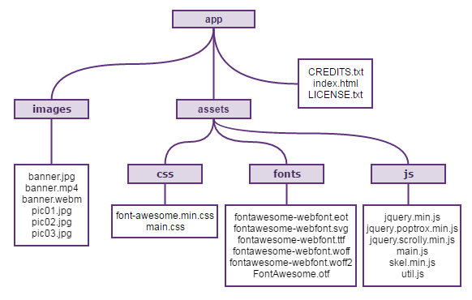
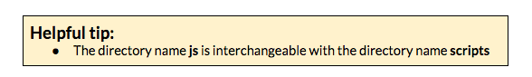
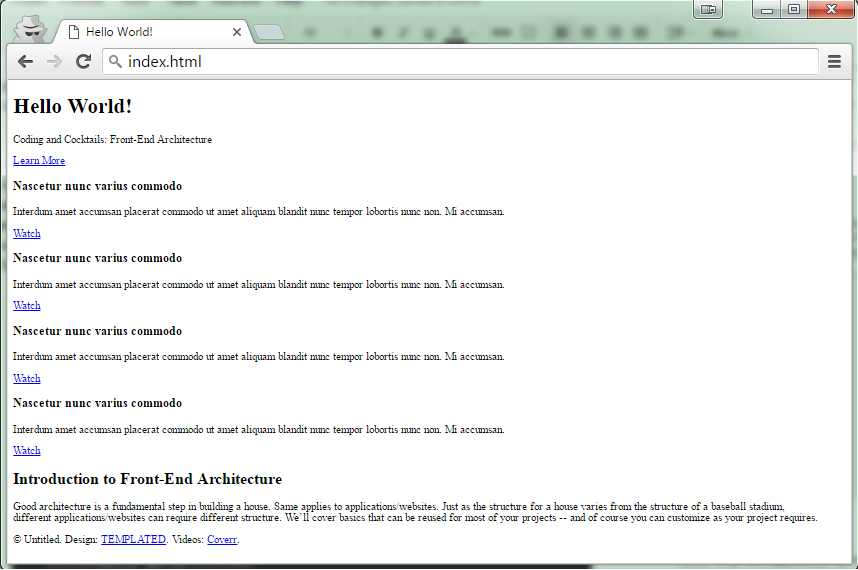
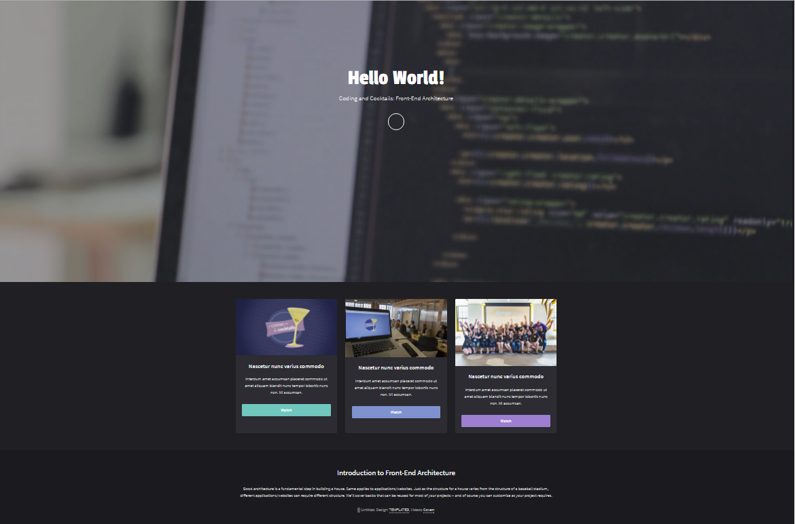
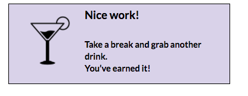

Part I: Manual Practice
First, let’s take a look at how to manually organize your project files.
- Download the assets at http://bit.ly/2bVHBAi and unzip the file.
Create a root directory named app in your CodingAndCocktails folder.
Let’s get organizing! Create the necessary folders and add your project files like in the following diagram.


Now open the index.html file in Google Chrome to preview your site. Oh no! Looks like the site is broken. We’re missing the styling and some images specifically. Our HTML page doesn’t know how we’ve organized our project so we’ll need to tell it where to find the files it needs.

Open index.html in SublimeText and search for all the lines starting with
< -- REPLACE DIR PATHto remove that block of code. Also remove the closing comment mark,-->at the end of the same lines.In those same lines, you’ll see
DIRwhere the path of the files referenced should be. ReplaceDIRwith the applicable file path. In the example below, that would beassets/css/main.css.- Before:

After:

- Before:
Go through the rest of the index.html file and make the same necessary changes for the other lines beginning with
<-- REPLACE DIR PATH. Once done, save index.html and reload it in your browser.
Your site should now be working! We’ve organized all of your files AND index.html knows where they are located.
 